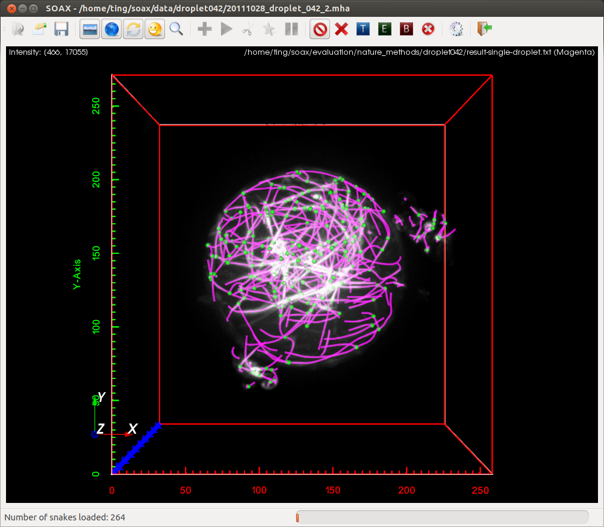

I am currently a research scientist at Konica Minolta Laboratory USA Inc. in Bay Area. I obtained my PhD in Computer Engineering from Lehigh University in 2016. My research area is deep learning and computer vision for cell biology. I worked with Prof. Xiaolei Huang and Prof. Dimitrios Vavylonis developing methods and tools for segmenting and tracking the dynamics of multi-dimensional biopolymer networks from 3D microscopy images and videos. I am the main developer of the SOAX software.
Lehigh University
Dissertation: Model-based curvilinear network extraction and
tracking toward quantitative analysis of biopolymer networks
2016
University of
Science and Technology of China
2009
University of
Science and Technology of China
2005

SOAX
An open source software extracting the geometry and
topology of multidimensional curvilinear networks commonly
found in biomedical images. For more information, please
see SOAX
website.
S. Wan, H. Lee, X. Huang,
F. Li,
Created by BLACKTIE.CO